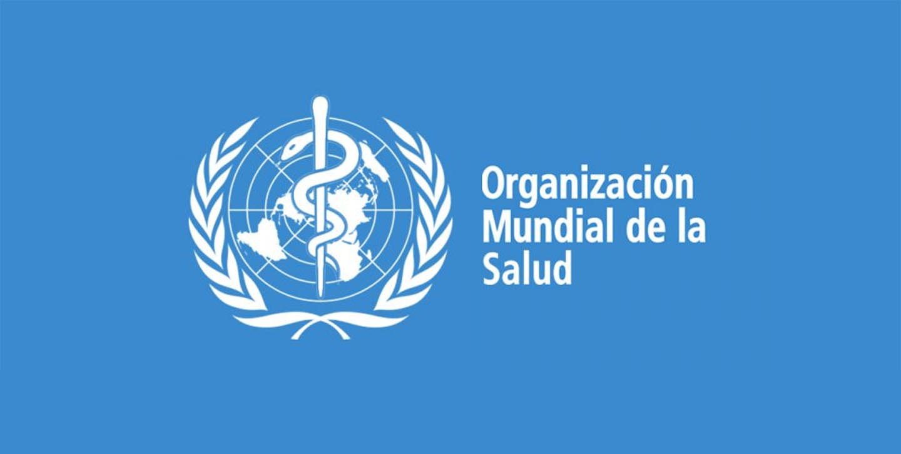

MISION
Informar a la poblacion en general sobre esta pandemia, el cuidado y prevencion que deben tener durante el tiempo que dure el Covid-19.
Informar a la poblacion en general sobre esta pandemia, el cuidado y prevencion que deben tener durante el tiempo que dure el Covid-19.
Lograr que esta informacion llegue a todas las personas y estas le den un buen uso para disminuir los casos en el pais y en el departamento de Santa Cruz.
| LOGO | ORGANIZACION | DIRECCIÓN | CREACIÓN |
|---|---|---|---|
|  | OMS | Ginebra, Suiza | 1948 |
| EYES.NET | Santa Cruz | 2020 | |
| ONU | Nueva York | 1945 |